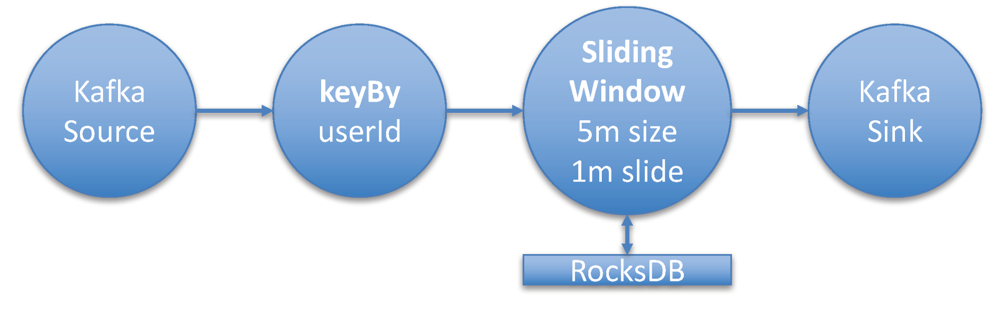
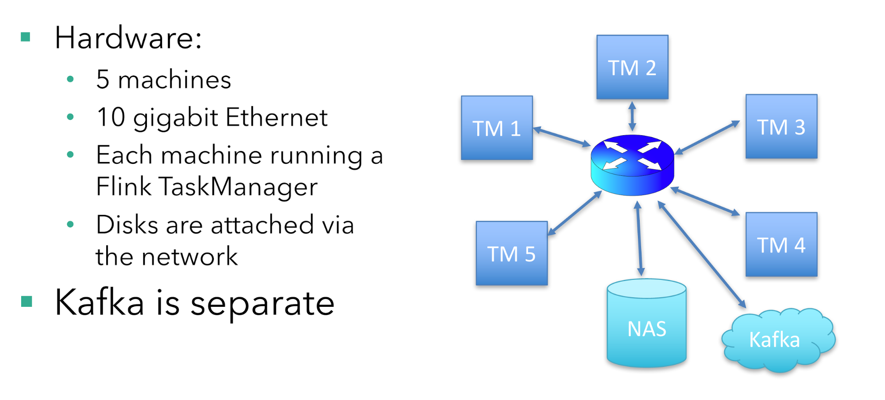
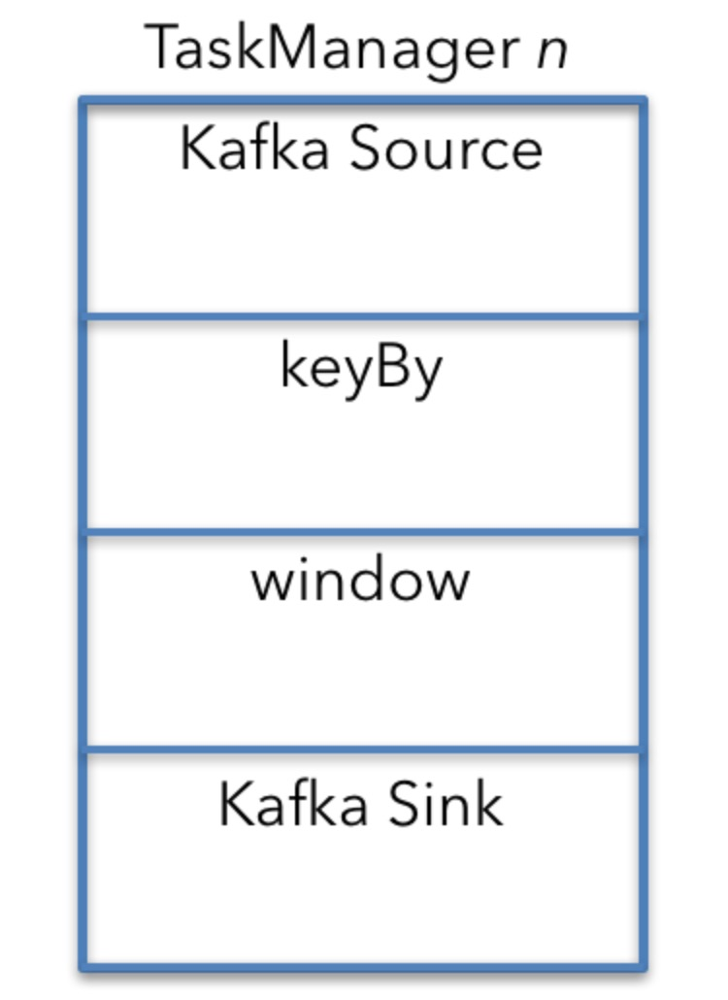
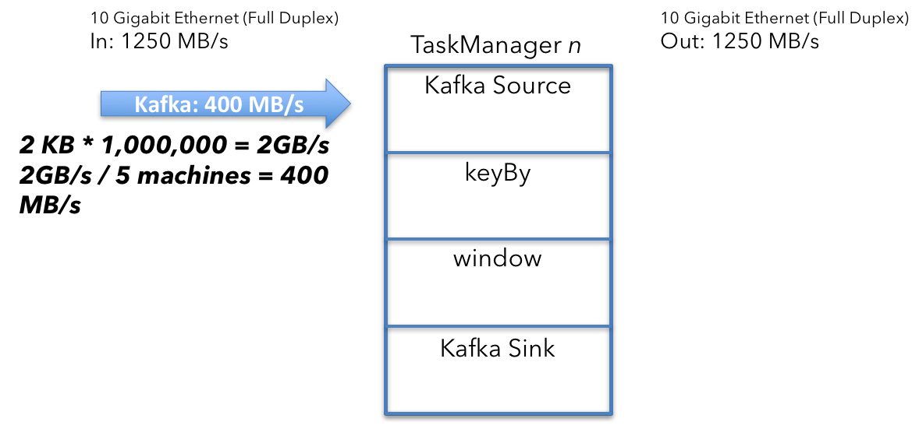
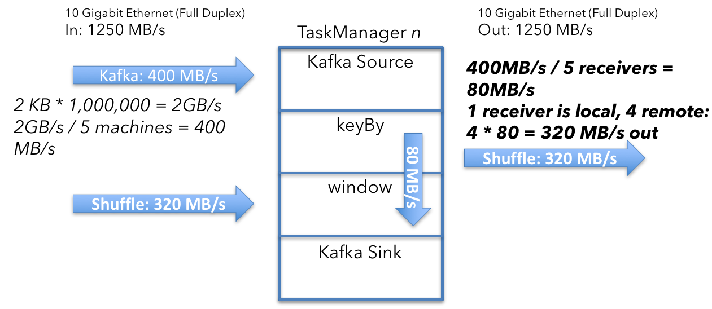
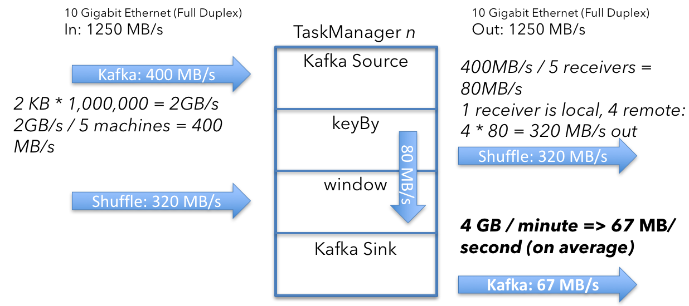
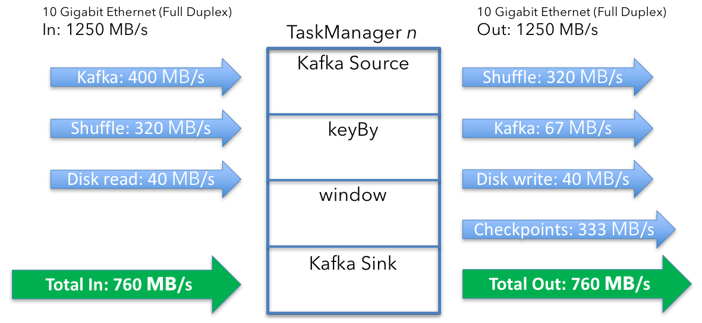
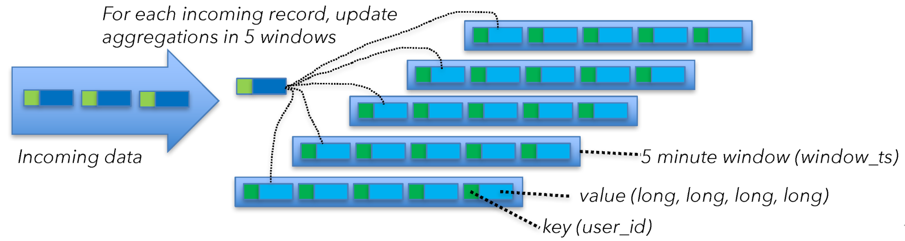
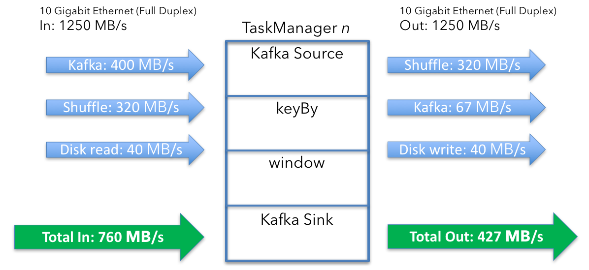
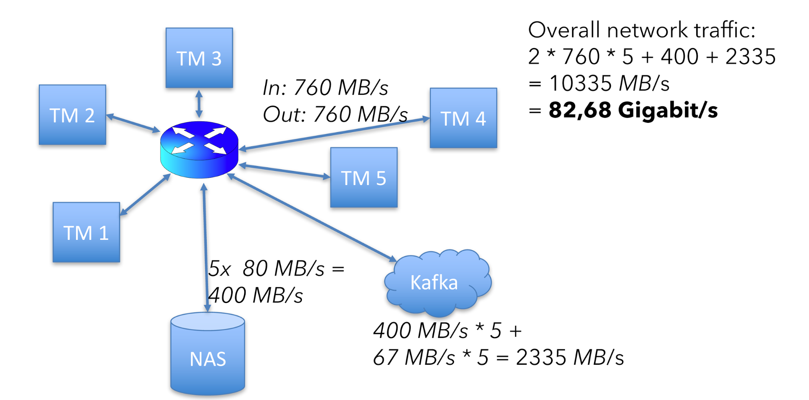

2017年柏林Flink Forward大会上Robert Metger的”Keep It Going: How to Reiably and Efficiently Operate Apache Flink”的演讲很受欢迎。Robert的其中一个主题演讲涉及到了如何估算Flink集群规模。Flink Forward大会的观众们认为这个计算方法对他们很有用，因此我们把他的演讲主题转变成这篇博客。
Flink社区上经常被问起的一个问题是当从开发转到线上时，如何估算集群规模大小。当然，最准确的的答案是根据需要，但是这并没有什么用。这篇博客提出了一系列问题使你能够计算出一些基准。
1 通过数学建立基准
首先，思考一下你的应用操作需要的资源基准的指标。
关键指标如下：
- 每秒的数据量和每条数据的大小
- 去重key的数量和每个key的state大小
- state更新的数量和state backend的方式
最后，考虑一下你的服务等级协议(SLAS)，比如宕机时间、延迟和最大的吞吐量。这些指标将直接影响你的容量计算。
接下来，看一下基于预算可用的资源大小。比如：
- 网络容量，需要考虑外部服务的网络消耗，比如Kakfa、HDFS等。
- 磁盘带宽，比如你使用磁盘的state backend，比如RocksDB。同时需要考虑外部服务的磁盘使用，比如Kafka、HDFS等。
- 机器的数量和它们的CPU和内存。
基于上述这些因素，你现在能够估算正常流程的的资源基准。另外，还需要增加一些资源用作异常的恢复和checkpointing。
2 样例：计算
我现在通过一个集群上的虚拟job部署来描述整个资源基准的建立过程。信封背计算法的所用到的数字是不精准的，同时并没有考虑的很全面。在后面，我会指出在做计算时的忽视的一些点。
2.1 Flink流式应用样例和硬件

在这个案列中，我将部署典型的Flink流式应用，Kafka Topic的数据作为数据源。这个流接着使用keyed， aggregating window操作转换。窗口操作执行5分钟的窗口聚合。同时假设有源源不断的数据进来，window被设置成1分钟滑动一次。
这表示每分钟执行一次过去5分钟内的窗口聚合。这个流式应用根据userId字段进行聚合。Kafka Topic中消息的大小平均是2KB。
吞吐量是每秒100万条消息。为了理解窗口操作的state大小，你需要知道distinct Keys的数量，就是userIds的数量，这边大约是5000万个不同的用户ID。对于每个用户，你需要计算4个数字，通过longs(8 byte)存储。
现在，让我们总结一下这个任务的关键指标：
- 消息大小：2KB
- 吞吐量：1000000 msg/sec
- Distinct Keys: 500000000(窗口聚合：每个key4个long大小)
- Checkpointing: 每分钟一次
— 硬件：
- 5台机器
- 10 gigabit 以太网
- 每台机器运行一个Flink TaskManager
- 磁盘通过网络挂载
— Kafka 独立部署

总共有5台机器运行这个job，每台机器上运行一个TaskManager。磁盘通过网络挂载，同时有10 gigabit的以太网接入。同时Kafka是独立部署在其他机器上。
每台机器有16CPU核。为了简化的需要，这边不考虑CPU和内存的使用情况。在实际情况下，你需要根据应用逻辑和state backend的使用，来考虑内存的使用。这个例子使用RocksDB state backend。（它是健壮的，同时对内存需求比较低）。
2.2 单机计算
为了理解整个job运行部署的资源需求，最容易的方式是关注单台机器和TaskManager的操作。你可以通过单台机器计算出来的数字来推断整个集群的资源需求。
默认(所有的操作都有并行度和没有特殊的调度限制)所有的操作在每台机器上都有运行。
在这个例子中，Kafka source， 窗口操作和Kafka sink都运行在每台机器上。

keyBy是一个分离的操作，因此资源需求计算比较容易。在现实中，keyBy是一个API，连接了Kafak Source和窗口操作。
我现在将从头到底理解这些操作的网络资源需求。
2.3 Kafka source
为了计算Kafka source收到的数据量，首先需要计算Kafka的聚合输入。sources每秒收到100万消息，每条消息2KB大小。
$$
2KB \times 1000000/s = 2GB/s
$$
2GB/s除以5台机器，得到如下结果：
$$
2GB/s \div 5 machines = 400MB/s
$$
集群中每台机器上TaskManager的source收到400MB/s的数据。

2.4 Shuffle / keyBY
接下来，你需要确保同一个key的所有事件落在一些机器上。这边，你从kafka中读取的数据可能被重新分区。
shuffle过程发送所有拥有相同key的数据到同一台机器，因此这边把400MB/s的数据分割成一个根据userId分区的流。
$$
400MB/s \div 5 machines = 80MB/s
$$
平均来看，你将发送80MB/s的数据到每一台机器。这个分析是从单台机器的角度，但是一些数据已经在目标机器上了，因此要减去80MB/s。
$$
400MB/s - 80MB/s = 320MB/s
$$

2.5 Window Emit and Kafka Sink
接下去的问题是窗口操作发送多少数据到Kafka Sink。结果是67MB/s，让我们看一下如何计算。
窗口操作为每个key保持了4个数字(longs)聚合。每一分钟，操作将发送当前的聚合值。每个key发送2ints(user_id, window_ts)和4 longs。
$$
(2 \times4bytes) + (4\times8bytes) = 40 bytes , per, key
$$
然后乘以keys数量(500000000除以机器数量)
$$
500000000 \div5machines \times40bytes = 40GB
$$
然后计算每秒的大小：
$$
40GB/min \div60=67MB/s
$$
这表示每个TaskManager从窗口操作中平均发送67MB/s的用户数据。因为Kafka sink运行在每个TaskManager上，所以没有进一步的分区操作。这就是从Flink到Kafka的发送的数据量。

从窗口操作中得到的数据每分钟会发送一次。在实际中，这个操作不会发以67MB/s的发送数据，而是在一分钟之内的几秒间到达最大带宽。
现在，总结一下：
- 进来的数据：720MB/s(400+320)per machine
- 出去的数据：387MB/s(320+67)per machine

2.6 State和Checkpointing
到目前为止，我们仅仅计算了Flink处理的用户数据。你同时还需要考虑磁盘的使用，比如存储state 和checkpointing。为了计算磁盘的花销，你需要查看窗口计算如何进入state。Kafka Source也需要保持一些state，但是跟窗口操作的state相比，可以忽略不计。
为了理解窗口操作的state大小，让我们换一个角度看这个问题。Flink计算5分钟的时间窗口，并且1分钟滑动一次。Flink是通过保持5个窗口来实现滑动窗口。根据先前提到的，在使用窗口时，你需要为每个窗口保持40bytes的状态，并且窗口是提前聚合的。对于每一条到来的事件，你首先需要取出当前聚合值，再更新聚合值，然后把新值写回去。

这意味着：
$$
40 , bytes ,of ,state \times 200000 msg/s , per , machine = 40MB/s
$$
有40MB/s的磁盘读写（每台机器上）。根据先前说的，磁盘是通过网络挂载的。因此需要在先前的基础上增加这个值。
现在总共需要的资源如下：
- 进入的数据：760MB/s(400MB/s data in + 320MB/s shuffle + 40MB/s state)
- 出去的数据：427MB/s(320MB/s shuffle + 67MB/s data out + 40MB/s state)

上述的计算考虑了state的进入，当事件到达窗口操作时触发。你还需要checkpoint和容错机制。如果一台机器或者其他任何东西挂掉，你想要恢复你的窗口并继续处理。
Checkpointing是每隔1分钟执行一次，并且每个checkpoint复制整个job的状态到通过网络挂载的文件系统。
让我们快速的看一下每台机器的state大小：
$$
40 , bytes , of , state \times 5 , windows \times100000000 , keys = 20GB
$$
接着算每秒的值：
$$
20GB \div 60 =333MB/s
$$
和窗口操作类似，checkpointing也是每分钟执行一次。它尝试全速发送数据到外部存储。Checkpointing引起了额外的state进入。自从Flink1.3后，RocksDB支持增量checkpointing来降低每次checkpoint时所需的网络传输。
计算更新如下：
- 进入的数据：760MB/s(400 + 320 + 40)
- 出去的数据：760MB/s(320 + 67 + 40 + 333)
这意味着整个集群网络流量是：
$$
(760 + 760)\times5 + 400 + 2335=10335MB/s
$$
400是80MB的state读写乘以5台机器。2335是Kafka进和出的总值。
整个硬件的网络可用容量如下：

这边我要加一个免责声明。上述这些计算没有包含协议的花销，比如TCP、Ethernet和RPC（在Flink、Kafka和HDFS等中）。但是上述的计算仍旧对如何计算一个job的资源有指导意义。
Scale Your Way
基于我的分析，这个例子中，5个节点的集群，在典型的操作中，每个机器需要处理760MB/s的数据进出，同时每台机器可以处理的容量是1250MB/s。这样保留了40%的网络容量来应对我刚才提到的复杂度，比如网络协议花销，事件重放，数据倾斜引起的不平均的负载等。
当然，没有一个标准答案来说明留40%的余量是否合适。但是这个算法可以给你一个好的开始。尝试上述的计算，修改上述的参数为你自己的参数。Happy scaling！
翻译源
How To Size Your Apache Flink® Cluster: A Back-of-the-Envelope Calculation